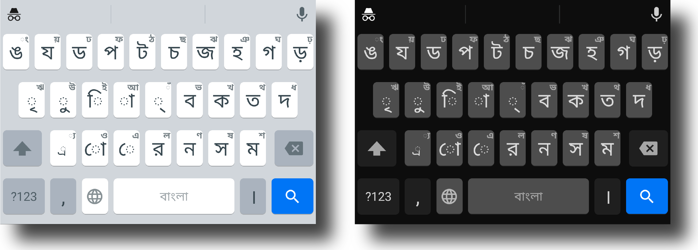

Open Board
The best alternative for Bijoy keyboard for Bangla.
A cross platform Bijoy-like keyboard.
This is a free and open-source application.
GNU General Public License v3.0
Download the older Otobi Keyboard anyway.
Looking for
Windows or Linux support?
Click
here

রিদ্মিক কেন নয়?
রিদ্মিক কিবোর্ডে বাংলা টাইপিংয়ের জন্য ফোনেটিক (অভ্র), জাতীয় এবং প্রভাত লেআউট যুক্ত করা আছে। আপনি বিজয় কিবোর্ডে অভ্যস্ত হলে জাতীয় বা প্রভাত লেআউটে বাংলা টাইপিংয়ে সমস্যা হতে পারে।
কম্পিউটার কিংবা মোবাইলে বাংলা টাইপিংয়ের ক্ষেত্রে অভ্র ফোনেটিক অবশ্যই একটি নতুন যুগের সূচনা করেছে। কিন্তু বাংলা টাইপিংয়ের আসল সৌন্দর্য হচ্ছে বাংলা বর্ণমালা দিয়ে বাংলা টাইপিং। আর বাংলাদেশের অধিকাংশ মানুষ বাংলা ফিক্সড লেআউটের ক্ষেত্রে বিজয় কিবোর্ডে অভ্যস্ত। অ্যান্ড্রয়েডে বিজয় কিবোর্ডের অল্টারনেটিভ হিসেবে অটবি কিবোর্ডের আইডিয়া নিয়ে আসা।
ফিচার
- বিজয়ের অনুরূপ কিবোর্ড লেআউট
- ক্লিপবোর্ড থেকে কপি-পেস্ট করার জন্য আলাদা বাটন
- Number row option
- স্পেস বারে swipe করে কার্সর নিয়ন্ত্রণ
- ব্যাকস্পেস বাটনে swipe করে একাধিক বর্ণ একসাথে ডিলিট করার অপশন
- ইমোজি সাপোর্ট
- Incognito mode
- ৰ, ৱ, ৺, ঽ, ৡ এর মতো স্বল্প ব্যবহৃত বর্ণ টাইপের ব্যবস্থা
- ফ্রি এবং ওপেন-সোর্স, তাই ১০০% সেফ
বিজয় এবং অটবি লেআউটের পার্থক্য
বিজয় কিবোর্ডে এ-কার, ঐ-কার ব্যবহারের জন্য তা ব্যঞ্জনবর্ণের প্রথমে লিখতে হয়, যা পুরাতন পদ্ধতি। অন্যদিকে অটবি যেহেতু সিস্টেমের ইউনিকোড ভিত্তিক ইনপুট মেথড ব্যবহার করে, সেজন্য এতে স্বরবর্ণের কার সবসময় ব্যঞ্জনের পরে যুক্ত করতে হয়।
অন্যদিকে বিজয় লেআউটে ো, ৌ চিহ্নগুলো নেই, কারণ এগুলো বিজয় কিবোর্ডে ভেঙে লিখতে হয়। অন্যদিকে অটবি কিবোর্ডে ইউনিকোডের সাথে সামঞ্জস্য রাখার জন্য এই চিহ্নগুলো রাখা হয়েছে।
এছাড়া ZERO-WIDTH JOINER, ZERO-WIDTH NON-JOINER এর মতো কিছু বিশেষ ইউনিকোড ক্যারেক্টার অটবি কিবোর্ডে আছে, যা বাংলা টাইপিংয়ের জন্য মাঝেমাঝে প্রয়োজন পড়ে। অ্যান্ড্রয়েডের লেআউটে দাঁড়ি, খণ্ড ৎ, বিসর্গ, চন্দ্রবিন্দুর পজিশন মূল বিজয় কিবোর্ডের থেকে আলাদা।
এর পরেও যদি আপনার কাছে মনে হয় যে অটবি কিবোর্ডে বিজয়ের কপিরাইট লঙ্ঘন করা হয়েছে, তাহলে QWERTY এবং QWERTZ লেআউট দুটোর কথা একবার ভাবুন। কেবল একটি বর্ণের পজিশনের পার্থক্যে নতুন একটি লেআউটের উৎপত্তি হয়েছে।